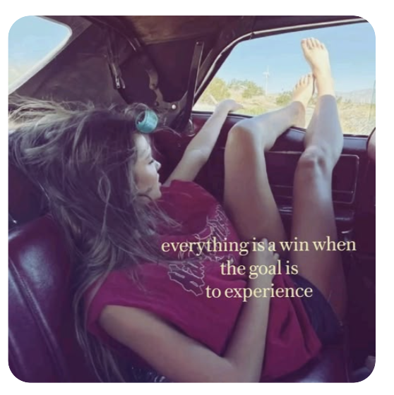

Hello, my name is I.R.! Some of my interests and hobbies are swimming, arts and crafts, reading, hiking, and baking. I am a big fan of being outdoors and making new memeories/experiences. One day I hope to hike the dolomite trail and do a triathlon! This portfolio is made to share my journey in computer science by sharing all of my hard work, skills, struggles, and achievements. In this Intro to Computer Science class, I started with little to no experience in computer science, but as my time in this class has come to an end, I have gained so much knowledge about code, algorithms, the problem-solving process, data structures, and so much more. It was tough at times, but also easy. I learned that you must persist.